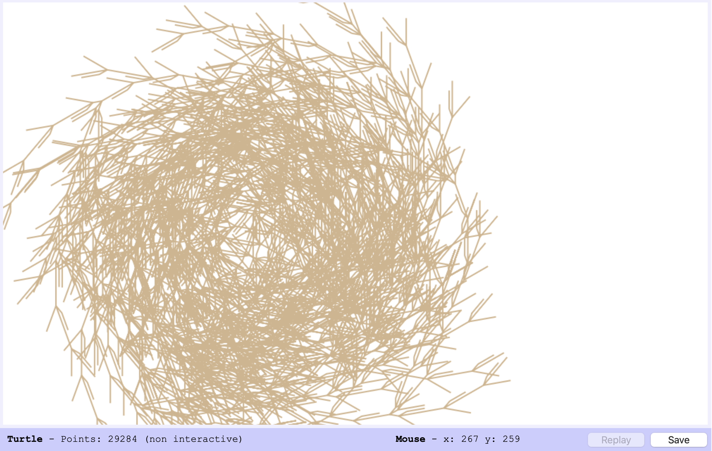

Line 1: This line imports the pyplot module from the matplotlib library and assigns it the alias plt. This module is commonly used for creating visualizations in Python, such as plotting graphs.
Line 2: This imports the random and randint functions from the random module. These functions are used for generating random numbers. random() generates a random float between 0 and 1, while randint(a, b) generates a random integer between a and b (inclusive).
Line 3: This imports the numpy library and assigns it the alias np. numpy is a powerful library for numerical computing in Python, providing tools for working with arrays and matrices.
Line 5: This line defines a function called midpoint that takes two arguments, P and Q. These arguments are expected to be tuples or lists representing points in 2D space (e.g., (x, y)).
Line 6: This line calculates the midpoint between points P and Q using the midpoint formula: ((x1 + x2)/2, (y1 + y2)/2). The result, a new point representing the midpoint, is then returned by the function.
Line 8: This line defines a list called vertices that stores the coordinates of the three vertices of an equilateral triangle. np.sqrt(3) is used to calculate the y-coordinate of the second vertex, ensuring the triangle is equilateral.
Line 9: This line sets the number of iterations for the Chaos Game to 50,000. In other words, the game will be played 50,000 times.
Line 10: This line creates two lists, x and y, to store the x and y coordinates of the points generated during the Chaos Game. Both lists are initialized with 50,000 zeros.
Line 11: This line sets the initial point for the Chaos Game to a random location within the unit square (0 to 1 for both x and y coordinates).
Line 13: This initiates a loop that will run iterates (50,000) times.
Line 15: Inside the loop, this line randomly selects one of the three vertices of the triangle using randint(0, 2). The result, k, will be 0, 1, or 2, corresponding to the index of the chosen vertex in the vertices list.
Line 17: This line calculates the midpoint between the randomly selected vertex (vertices[k]) and the previous point ((x[i-1], y[i-1])) using the midpoint function. The resulting coordinates are then stored in the x and y lists.
Line 19: This line creates a new figure for the plot with a size of 8 inches by 8 inches.
Line 20: This line creates a scatter plot using the points generated during the Chaos Game. The x and y lists provide the coordinates, color = 'b' sets the color of the points to blue, and s=0.1 sets the size of the points to 0.1.
Line 21: This line sets the title of the plot.
Line 22: This line ensures that the x and y axes have equal scaling, which is important for visualizing the equilateral triangle correctly.
Line 23: This line displays the plot.
Chaos Game Sierpinski Triangle
Chaos Game Sierpinski Triangle Modifications
Sierpinski Tetrahedron (Special Case)
My first modification appears to be a simple, partially unfilled square; yet this is actually a special view of the Sierpinski Tetrahedron, which is a
third dimensional version of the Sierpinski Triangle (Chaos game). To create this, I added a fourth vertex in line 8 of the code and changed coordinate values of the vertices.
To compensate for the addition of this fourth vertex, I altered our k variable in line 15; instead of assigning k to randint(0,2), it is now assigned to randint(0,3).
Cosmetic modifications include a color change from blue 'b' to red 'r' in line 20, and a slight increase in point size s=0.2 instead of the original s=0.1, also in line 20.
Tetrahedron
In this modification, I attempted to create a simple, 3 dimensional tetrahedron on a 2 dimensional coordinate grid. Ineterestingly, there is a visual effect of x,y,z coordinate axes within
the resulting image, shown as a more solid blue color where dots have gathered more densely. In the associated code, I added five vertices in line 8 along with associated coordinate values and doubled
the value assigned to the iterates variable in line 9 from 50,000 to 100,000. To compensate for the five vertices,I altered our k variable in line 15;
it is now assigned to randint(0,4). Although I kept the original blue color in line 20, I decreased point size to s=0.05 in line 20.
Sierpinski Tetrahedron
Here is the same code as in the previous figure, with one minor alteration; merely changing the multiplication constants in line 6 from 1/2 to 2/3 generates a figure a bit reminiscent to a Sierpinski Tetrahedron.
It has a subtle third dimensional illusion.
Squares
In this figure, I attempted to reproduce a Sierpinski Carpet; although the resulting image is not quite a Sierpinski Carpet, the squares form a noticeable pattern.
To do this, I: altered the original multiplication constants in line 6 from 1/2 to 4/9; included four vertices in line 8 instead of 3; compensated for the additional
vertex by changing the assignment of k in line 15; and increased dot size from s=0.1 to s=0.2 in line 20. Note that I kept the original iteration value of the iterates
variable in line 9.
Sierpinski Triangle (Military Tactical Formation)
This figure showcases how subtle changes to coordinates of vertices can produce different images. I implemented the code from the previous Squares figure, but
only altered the last three coordinate values of the vertices in line 8. Otherwise, the code remains the same from the previous Squares code, except for a blatant color change in line 20
from blue 'b' to green 'g'. Instead of a square-like figure forming, the resulting image is reminiscent to a Sierpinski Triangle.
Spaceships, Tactical Formation Toward Origin
In this figure, I have again only manipulated the coordinate values of the vertices in line 8 and changed color blue 'b' to yellow 'y' in line 20. This once more showcases
how subtle changes to coordinate values of the vertices can yield completely different resulting images.
Guilty Footsteps Tiptoeing Out Of Spilled Green Paint
This figure is more whimsical, as it appears like footprints crossing through wet paint. It was created by numerous alterations to the code, including:
alteration of the original constant in line 6 from 1/2 to 0.99; addition of a fourth vertex in line 8 with more sophisticated vertex values than in previous modifications;
doubling the value of the iterates variable in line 9 from 50,000 to 100,000; compensating for the fourth vertex by changing the value of the k variable in line 15 from
randint(0,2) to randint(0,3); and finally, changing color to green 'g' and shrinking point size from s=0.1 to s=0.01, all in line 20. Note that retaining the original plot title
showcases how much the produced image has evolved from its preceding Sierpinski Triangle.
Chaos Game: Barnsley's Fern
Barnsley Fern Code
Line 1: Imports the random module to generate random numbers for selecting transformations.
Line 2: Imports the pyplot module from matplotlib for plotting the fern.
Line 4: Concise, polite description of the code's intent in lines 5-23. Basically, the functions (f1, f2, f3, f4), are part of a system to create a Barnsley Fern fractal. Each function defines a specific geometric transformation that's applied to points. As a quick example, f1 represents one particular transformation within that system.
Line 5: This line defines a function named f1 that accepts two input values, x and y, representing the coordinates of a point.
Line 6: This line sets the x-coordinate of the point to 0. Regardless of the original x value passed in, it gets overwritten.
Line 7: This line scales the y-coordinate of the point by a factor of 0.16. This effectively shrinks the point's vertical position.
Line 8: This line returns the modified x and y values as a tuple, representing the new coordinates of the point after the transformation.
Line 10: This line defines a function named f2 that accepts two input values, x and y, representing the coordinates of a point. Now, function f2 is a core part of creating the Barnsley Fern fractal; it is is a more complex transformation that involves both scaling and rotation of the input point.
Line 11: This line calculates a new x value (x_new) using a combination of the original x and y. It involves scaling and shifting the coordinates.
Line 12: This line calculates a new y value (y_new) in a similar way, using a different combination of scaling and shifting operations.
Line 13: The function returns the calculated x_new and y_new as a tuple, representing the transformed point.
Line 15: This line defines a function named f3 that accepts two input values, x and y, representing the coordinates of a point.
Line 16: This line calculates the new x-coordinate (x_new) under the given specifications (values and numerical operations) for f3.
Line 17: This line calculates the new y-coordinate (y_new) under the given specifications (values and numerical operations) for f3.
Line 18: Here, the function returns the new coordinates (x_new, y_new) as a tuple for f3.
Line 20: This line defines a function named f4 that accepts two input values, x and y, representing the coordinates of a point.
Line 21: This line calculates the new x-coordinate (x_new) under the given specifications (values and numerical operations) for f4.
Line 22: This line calculates the new y-coordinate (y_new) under the given specifications (values and numerical operations) for f4.
Line 23: Here, the function returns the new coordinates (x_new, y_new) as a tuple for f4.
Line 25: Concise, polite description of the code's intent in line 26.
Line 26: Here we assign the variable probabilities to, essentially, store a list of probabilities. On the RHS, we have [0.01, 0.85, 0.07, 0.07], which is a list containing four probability values.
Each value corresponds to one of the four transformation functions (f1, f2, f3, f4) used to create the Barnsley Fern pattern.
The values within the lsit each correspond to a percentage value in which a function has a probability of being selected; for example, function f2 is selected with a probability of 85% (0.85).
By assigning different probabilities to each function, we can create a variety of fern-like patterns.
The higher the probability of a function, the more it will influence the final shape.
In this case, f2 has the highest probability, making it the most dominant transformation in generating the Barnsley Fern.
Line 28: Concise, polite description of the code's intent in lines 29-46.
Line 29: Here we use def to define the function called barnsley_fern. Note that barnsley_fern takes one argument, iterations, which determines how many points to generate for the fern.
Line 30: This line initializes two variables, x and y, to 0. These represent the starting coordinates of a point.
Line 31: This line creates an empty list called points to store the generated points.
Line 33: This line uses a for loop that runs iterations times, generating a new point in each iteration.
Line 34: Inside our for loop, random.random() generates a random number between 0 and 1, stored in rand.
Lines 35-42: In these lines, we have a series of if and elif statements which compare rand to cumulative probabilities defined in our previously created list called probabilities (which is defined outside of this code and has four values, as elucidated in line 26).
Based on the random number and probabilities, one of four functions (f1, f2, f3, or f4) is selected.
These functions (defined outside of the provided code) apply specific mathematical transformations to the current x and y coordinates.
Line 44: The transformed coordinates are then added as a tuple (x, y) to the points list.
Line 46: After all iterations, the function returns the points list, which now contains a collection of coordinates that represent the Barnsley fern.
In essence, the barnsley_fern function simulates the growth of the fern by repeatedly applying random transformations to a point's coordinates.
The probabilities associated with each transformation determine the overall shape and structure of the resulting fractal pattern.
Line 48: Concise, polite description of the code's intent in lines 49-50.
Line 49: This line sets a variable called iterations to 100000. This variable controls how many times the barnsley_fern function will be executed, essentially determining the number of points that will be generated for the fern. More iterations generally lead to a more detailed and filled-in fern shape.
Line 50: This line calls the barnsley_fern function, passing the iterations value as an argument. The barnsley_fern function is designed to calculate and return a list of (x, y) coordinate pairs that represent points on the fern. The result is stored in the fern_points variable, which will then hold all the points that make up the Barnsley Fern fractal.
Line 52: Concise, polite description of the code's intent in lines 53-57.
Line 53: In this line, fern_points is a list of (x, y) coordinate tuples representing the points of the fern.
*fern_points unpacks this list into individual tuples.
zip() combines the corresponding elements of these tuples into two separate tuples: one for the x-values (x_vals) and one for the y-values (y_vals).
Line 54: This line creates a new figure for the plot with a specific size of 6 inches wide and 10 inches tall. This ensures that the fern is displayed with the correct proportions.
Line 55: In this line, plt.scatter() creates a scatter plot.
x_vals and y_vals provide the data for the x and y coordinates of the points.
s=0.1 sets the size of the points to be very small (0.1), creating a more detailed and fern-like appearance.
color='green' makes the points green, which is a traditional color for the Barnsley Fern.
Line 56: This line adds a title to the plot, simply labeling it "Barnsley Fern".
Line 57: Here, we use plt.show() as the final command that displays the created plot on the screen. Without it, the plot would be generated but not shown, which would be rather sad.
Before beginning on the Barnsley Fern Modifications, I thought it was pertinent to include a more mathematical explanation of the formulation of Barnsley's Fern to exemplify the
complexity involved in mathematical translation when writing code. Above is an image taken from a page on Wolfram MathWorld, Barnsley's Fern (Weisstein Barnsley). This visualizes the
matrices within the transformations section of the code in lines 4-23.
Barnsley's Fern Affine Transformations (Wikipedia, Barnsley's Original Asplenium Adiantum-Nigrum Fern)
The Wikipedia page associated to Barnsley's Fern, which is based on the real-life Asplenium adiantum-nigrum fern, is also quite apropos for this assignment,
as it details the affine transformations as well as how to implement them (Barnsley fern).
For our first modification, the Wikipedia page associated to Barnsley's Fern provides a distinct fern mutation based off the real-life Thelypteridaceae fern,
whose formula was discovered through experimentation (Barnsley fern). In the image directly above is the chart of associated transformation constants taken from Wikipedia (Barnsley fern).
These constants can easily translate into the given code sections, Transformation Functions and Probabilities (lines 4-26), as shown below, to form the Thelypteridaceae fern.
Note that it was unnecessary to alter any other section of code to reproduce this Barnsley fern variation, excluding line 56 to edit the plot title.
For our second modification, another Wikipedia page associated to Barnsley's Fern provides another distinct fern mutation, based off the real-life Leptosporangiate fern (File).
Below is an image of the Leptosporangiate fern transformation constants involved for creation (File).
These constants can easily translate into the given Python code sections, Transformation Functions and Probabilities (lines 4-26), as shown above, to form the Leptosporangiate fern.
Note that it was unnecessary to alter any other section of code to reproduce this Barnsley fern variation, excluding line 56 to edit the plot title.
Barnsley's Fern, Monochromatic
Barnsley's Fern, Stemmy With Yellow Border
Barnsley's Fern, Single Stemmed With Yellow Border
Barnsley's Fern, Slimmer With Saturated Green Color
Barnsley's Fern, Slim With Saturated Purple Color
Part 2: L-Systems
L-System Setup Code
Line 1: !wget: This part uses a command called wget, which is a tool often used in Linux environments to download files from the internet. The exclamation mark (!) at the beginning tells the Jupyter Notebook to run this line as a shell command, not as regular Python code.
-O turtle_setup.py: This option specifies that the downloaded file should be saved with the name turtle_setup.py. -O is an option for wget that lets you choose the output file name.
'https://raw.githubusercontent.com/williamedwardhahn/fractal25/refs/heads/main/turtle_setup.py': This is the URL where the file is located. It's getting the file turtle_setup.py from a GitHub repository.
Line 2: from turtle_setup: This indicates that we're importing things from a file named turtle_setup.py - the one we just downloaded.
import *: The asterisk (*) is a wildcard. It means "import everything" from that file. This makes all the functions, classes, and variables defined in turtle_setup.py available for use in the current notebook.
L-Systems Fern Code
Line 1: Concise, polite description of the code's intent in lines 2-3.
Line 2: This line sets up the drawing environment for the turtle. It's like preparing a canvas or a piece of paper for drawing.
Line 3: This line makes the turtle visible on the screen. By default, the turtle might be hidden, so this command makes it appear as a small arrow or triangle shape, ready to start drawing.
Line 5: Concise, polite description of the code's intent in lines 6-7.
Line 6: This line defines a 2-parameter function called apply_rule. It takes two inputs, char and rules.
char represents a single character from the L-system's current string, while rules is a dictionary that contains the rules for the L-system.
These rules define how characters in the string are replaced or transformed.
Line 7: This line is the heart of the function and uses the get() method of the rules dictionary.
It tries to find the char within the rules dictionary.
If char is found as a key in the rules, the function returns the value associated with that key (which is the replacement for char according to the L-system rules).
If char is not found in the rules, the function returns the original char itself (meaning no change is applied to it).
Line 9: Concise, polite description of the code's intent in lines 10-14.
Line 10: In this line, we use def to define a 3-parameter function called generate_lsystem.
Parameter axiom is the starting string or symbol of the L-system. It's like the seed of the fractal.
Parameter rules is a dictionary containing the rules for how the L-system evolves. The keys are symbols, and the values are the strings they are replaced with in each iteration.
Parameter iterations is an integer that determines how many times the rules are applied to the L-system string. More iterations create more complex fractals, which is what we generally like for visual appeal and academic exploration.
Line 11: Here, the function starts by assigning the axiom to a variable called current_string. The axiom is the initial string that the L-system begins with.
Line 12: This is a for loop that runs for the specified number of iterations.
Line 13: In this line, we have apply_rule(char, rules), which is assumed to be a separate function (defined earlier) that takes a character (char) and the rules dictionary. It applies the corresponding rule to the character. If no rule is found for the character, it returns the character itself.
[apply_rule(char, rules) for char in current_string] is a basically list comprehension. It iterates through each character (char) in the current_string, applies the apply_rule function to it, and creates a new list with the results.
Finally, ''.join(...) takes the list generated by the list comprehension and joins the elements together into a single string. This new string becomes the updated current_string for the next iteration.
Line 14: In this line, after the loop completes all iterations, the function returns the final current_string, which now represents the generated L-system fractal pattern encoded as a string.
Line 16: Concise, polite description of the code's intent in lines 17-33.
Line 17: In this line, we use def to define a 3-parameter function called draw_lsystem with parameters turtle_string, length, angle.
Line 18: Here, we use [] to create a list called stack. Essentially, this will store the turtle's position and direction whenever it encounters a '[' character, allowing it to return to that state later.
Line 19: This is a for loop that iterates through each character (command) in the turtle_string that represents the L-system instructions.
Inside this ofr loop, a series of if and elif statements will check the current command and perform the corresponding action.
Lines 20-21: These lines implement an if command to move the turtle forward by the specified length.
Lines 22-23: These lines hold the else if condition to turn the turtle left by the specified angle.
Line 24-25: These lines hold the else if condition to the turtle right by the specified angle.
Line 26: This is another else if condition within the current for loop with commands in lines 27-29 that will initiate when conditions are appropriate.
Line 27: Here we save the turtle's current position using getx(), gety().
Line 28: Here we save the turtle's current heading (direction) using heading().
Line 29: Here we push this position and heading information onto the stack for later retrieval.
Line 30: This is the final else if condition within the current for loop with commands in lines 31-33 that will initiate when conditions are appropriate.
Line 31: This line pops the last saved position and heading from the stack.
Line 32: This line implements the jump() command to move the turtle directly to the saved position without drawing (like lifting pen from paper).
Line 33: This line implements the face() command to set the turtle's heading to the saved direction.
In essence, function draw_lsystem takes a string of L-system instructions (turtle_string) and uses the Turtle graphics library to draw the corresponding fractal. The length and angle parameters control the size and shape of the fractal.
Essentially, we can describe these seemingly complicated instructions in a simple manner as follows:
'F': will draw forward; '+': will turn left; '-': will turn right; '[': will save current position and heading; and ']': will restore previous position and heading.
Line 35: Concise, polite description of the code's intent in lines 36-39.
Line 36: In this line, the variable rules is assigned a dictionary that holds the rules of our L-system. The key 'F' represents a symbol in the L-system.
The value 'FF+[+F-F-F]-[-F+F+F]' is the replacement rule for 'F'.
This means whenever the system encounters an 'F', it will replace it with this sequence of characters.
Line 38: In this line, variable axiom is assigned the starting point (or initial string) for the L-system.
Think of it like the seed of the pattern. Here, the axiom is simply 'F'.
Line 39: In this line, variable iterations determines how many times the L-system rules will be applied.
Each iteration makes the pattern more complex by substituting symbols with their replacement rules.
Here, it's set to 4, meaning the rules will be applied 4 times.
Line 41: Concise, polite description of the code's intent in line 42.
Line 42: In this line, turtle_string is a variable that will store the generated string. This string contains a sequence of characters that represent turtle commands (previously mentioned) like "move forward," "turn left," and "turn right."
Now, generate_lsystem(axiom, rules, iterations) calls the generate_lsystem function to create the instruction string with the three parameters: axiom; rules; and iterations, which were described in depth earlier.
Line 44: Concise, polite description of the code's intent in lines 45-47.
Line 45: This line moves the turtle to a specific position on the screen without drawing anything. Think of it as lifting the pen and placing the turtle at the coordinates (400, 500). The coordinate system starts from the center of the screen.
Line 46: This line sets the direction the turtle is facing. 0 degrees means the turtle is facing right (east). So, this line orients the turtle to face east.
Line 47: This line sets the color of the pen the turtle is holding to green. Any subsequent lines drawn by the turtle will be green, which is typically ideal for creation of a fern.
Line 49: Concise, polite description of the code's intent in lines 50-52.
Line 50: Here we set our length variable to 8. This variable determines how far the turtle will move forward when it encounters an 'F' in the turtle_string. Basically, it defines the length of each branch in our fractal tree.
Line 51: Here we set our angle variable to 25. This variable determines the angle by which the turtle will turn when it encounters a '+' or '-' in the turtle_string. '+' signifies a left turn, and '-' signifies a right turn. This angle is crucial for creating the branching structure of the fractal tree.
Line 52: In this line, draw_lsystem is the function we defined previously to interpret the L-system string and control the turtle's movements.
Our 3 parameters have already been described previously, but for consistency, we will briefly detail them as follows:
turtle_string is the string generated earlier using the L-system rules. It contains the sequence of commands ('F', '+', '-', '[', ']') that guide the turtle's drawing;
length is the length of each branch, which we set to 8;
angle is the angle of each turn, which we set to 25.
Line 54: Concise, polite description of the code's intent in line 55.
Line 55: In our final line of code, we use the function show(). This function is part of the turtle graphics library. After the turtle has finished drawing, calling show() will pause execution and display the image/animation drawn by the turtle so far.
L-Systems Fern
L-Systems Fern Modifications
Fern 1 (Basic)
To create this rather foundational fern figure, I made simple changes to the code starting from line 36 (above line 36 remains untouched for this and all upcoming fern figures).
In line 36, I slightly altered the value assigned to the L-System rules variable; I merely changed the middle bracket set from [+F-F-F] to [F-FF]. Next, I changed the turtle's
jump() function coordinates in line 45, raising both x and y values for a better fit on the canvas. Finally, I changed the values assigned to variables length and angle, in lines 50-51, by
decreasing length from 8 to 7, and by increasing the angle from 25 to 33. The idea behind this figure is to showcase how relatively simple changes can greatly impact the final form of the fern.
Fern 2 (Leaves)
Upon closer inspection, viewers can spy enclosed leaves on this fern. What is especially interesting about this fern is that these leaves,
entirely absent in the image produced by the original code, are generated with only one modification to the L-System rules variable in line 36.
In the values assigned to variable rules in line 36, notice that the first minus sign within the second bracket is missing; i.e.,
instead of 'FF+[+F-F-F]-[-F+F+F]' we have 'FF+[+F-F-F]-[F+F+F]. No other alterations have been madee to the original code, yet leaves have generated.
Fern 3 (Lush Areca Palm)
This fern is very similarly created as the first modified fern. In comparison to the first modified fern, as described in-depth above, this fern has only minor
changes to the assigned value to the rules variable in line 36. This showcases how small changes to only the rules variable can produce a much more lush fern.
Fern 4 (Fractal Vine Tangle)
Here, we have only made two tiny parity changes to the assigned value to the rules variable in line 36.
However, we have also increased the value originally assigned to the iterations variable in line 39 from 4 to 5.
Additionally, we have increased the x and y coordinate values in the jump() function found in line 45.
In line 50, we have decreased the length variable's associated value from 8 to 7. Finally, we have raised the angle variable value in
line 51 from 25 to 39. We have generated an interesting fern fractal that has vine-like lines twisting into unique patterns.
Fern 5 (Underwater Seaweed)
Again, we have modified the original rules in line 36, increased iterations from 4 to 5 in line 39, and altered the jump() function coordinates in line 45
for a better fit. What it is particularly interesting in regards to the code is lines 50 and 51, in which we greatly decrease the length variable to be assigned to 2,
and moderately decreased the angle variable to be assigned to 10 degrees. A stiff weed-like plant generates, reminding me of some sort of vegetation found underwater.
Fern 6 (Lichen Grid)
Here, an interesting grid has formed. The rules variable in line 36 has only slightly been altered; the iterations variable in line 39 has been increased from 4 to 5;
the jump() function has been altered, specifically by increasing the x-coordinate; and the value assigned to the length variable in line 50 has been decreased from 8 to 5.
Now, this distinct grid-like appearance is heavily formed by the value assigned to the angle variable in line 51, which is set at 90 degrees (forming right angles).

Tumbleweed
I particularly like my tumbleweed variation. Instead of the classic green color typically assigned to signify the plant-like appearance of these constructed fractals, I chose 'tan'
to emphasize the desert tumbleweed appearance. For brevity, the code modifications made to create the tumbleweed are explicitly listed in the adjoining image of the associated code.
I like the apparent rotation effect of the individual strands.
Fern 7 (Fractal Flowers)
This fern has a fascinating flower-like fractal structure within its core. Again, the associated code with the modifications to create this fern is shown, and all modifications are apparent.
Part 3: Hilbert Curves
Hilbert Curves Setup Code
Line 1: !wget: This part uses a command called wget, which is a tool often used in Linux environments to download files from the internet. The exclamation mark (!) at the beginning tells the Jupyter Notebook to run this line as a shell command, not as regular Python code.
-O turtle_setup.py: This option specifies that the downloaded file should be saved with the name turtle_setup.py. -O is an option for wget that lets you choose the output file name.
'https://raw.githubusercontent.com/williamedwardhahn/fractal25/refs/heads/main/turtle_setup.py': This is the URL where the file is located. It's getting the file turtle_setup.py from a GitHub repository.
Line 2: from turtle_setup: This indicates that we're importing things from a file named turtle_setup.py - the one we just downloaded.
import *: The asterisk (*) is a wildcard. It means "import everything" from that file. This makes all the functions, classes, and variables defined in turtle_setup.py available for use in the current notebook.
Hilbert Curves Code
Line 1: Concise, polite description of the code's intent in line 2.
Line 2: In this line, we use import to brings the tools from the math module into our current script for use.
math is the name of the specific toolbox.
Line 4: Concise, polite description of the code's intent in lines 5-6.
Line 5: This line is a function call that initializes and sets up the drawing environment for the turtle graphics. Think of it as creating a blank canvas for the turtle to draw on.
Line 6: This line is another function call that's specific to turtle graphics. It makes the turtle visible on the screen. Imagine the turtle as a small arrow or triangle that moves around and draws lines. Initially, it might be hidden, and this command makes it appear so you can watch it draw.
Line 8: Concise, polite description of the code's intent in lines 9-10.
Line 9: This line defines a 2-parameter function named apply_rules. The parameters are char and rules:
char represents a single character from the L-system's current string (e.g., 'F', '+', '-');
rules is a dictionary that holds the rules of the L-system. The keys of the dictionary are characters, and the values are the strings they should be replaced with.
Line 10: This line is the heart of the function; it uses the get method of the rules dictionary.
It tries to find the char in the dictionary's keys.
If it finds char, it returns the corresponding value (the replacement string from the rules).
If it doesn't find char in the keys, it returns the original char itself.
Line 12: Concise, polite description of the code's intent in lines 13-18.
Line 13: In this line we use def to define a 3-parameter function called generate_lsystem. The generate_lsystem function takes an initial string (axiom), a set of rules (rules), and the number of times to apply those rules (iterations). It then generates the final L-system string that represents the fractal.
Line 14: In this line, we start with an initial string called the axiom. This will be the starting point of the pattern.
Line 15: In this line, we start a for loop that runs for the given number of iterations.
Line 16: This line applies the L-system rules to the current_string.
[apply_rules(char, rules) for char in current_string] is a list comprehension that iterates through each character (char) in the current_string.
For each character, it calls the apply_rules function (which we'll discuss next) to see if there's a rule to replace that character.
The result is a list of characters (either the original or the replacements).
Finally, ''.join(...) joins the list of characters back into a single string, creating the next_string.
Line 17: In this line, current_string is updated to the newly generated next_string, ready for the next iteration of the loop.
Line 18: After all the iterations, the function returns the final current_string, which now represents the complete L-system pattern.
Line 20: Concise, polite description of the code's intent in lines 21-31.
Line 21: In this line, we use def to define the 3-parameter function draw_lsystem.
First parameter: turtle_string is a string of characters representing the L-system instructions (e.g., "F+F-F").
Second parameter: length is the distance the turtle moves forward with each 'F' command.
Third parameter: angle is the angle the turtle turns with each '+' (left) or '-' (right) command.
Line 22: In this line, we have a for loop that iterates through each character (command) in the turtle_string.
Lines 23-24: In this If statement, if the current command is 'F', the turtle moves forward by the specified length.
Lines 25-26: In this first else if statement, if the current command is '+', the turtle turns left by the specified angle.
Lines 27-28: In this second else if statement, if the current command is '-', the turtle turns right by the specified angle.
Line 29: Concise, polite description of the code's intent in lines 30-31.
Lines 30-31: Here, this part handles any other characters in the turtle_string. In this case, it's used to ignore 'L' and 'R', which are used in the L-system rules but don't directly control the turtle's movement. The pass keyword simply means "do nothing." I've never seen the pass method before now, and find it interesting.
Line 33: Concise, polite description of the code's intent in lines 34-40.
Line 34: This line defines the starting point or initiator of the L-system. It's like a seed for the pattern. Here, it's simply the character 'L'.
Lines 35-38: This holds the dictionary rules defining the rules for how the L-system evolves.
Our first replacement rule is that 'L' gets replaced with '-RF+LFL+FR-'.
Our second replacement rule is that 'R' gets replaced with '+LF-RFR-FL+'.
Line 39: Here, variable iterations assigns and controls how many times the rules are applied; logically, more iterations mean a more complex and detailed Hilbert curve.
Line 40: Here, variable angle assigns the angle the turtle will turn when drawing the curve; in this case, it's a right angle (90 degrees).
Line 42: Concise, polite description of the code's intent in line 43.
Line 43: In this line, hilbert_string is a variable that will store a sequence of characters (a string). This string is essentially a set of instructions that will guide the turtle to draw the Hilbert curve.
generate_lsystem(...) is a function call; we're calling a function named generate_lsystem to actually create the instruction string for the Hilbert curve.
In essence, this line is using the generate_lsystem function, together with the L-system's starting point (axiom), rules (rules), and number of repetitions (iterations), to produce a string of instructions (hilbert_string) that defines the structure of the Hilbert curve. This instruction string will then be used to guide the turtle's movements and draw the curve.
Line 45: Concise, polite description of the code's intent in lines 46-48.
Line 46: This line sets a variable called size to a specified amount (in this case, 400).
This size represents the total desired width or height of the completed Hilbert curve on the screen.
Line 47: This line calculates the total number of line segments (n) needed to draw the Hilbert curve.
It uses the iterations variable (which was set to 5 earlier in the code).
Hilbert curves are based on a recursive pattern where the number of segments increases exponentially with the number of iterations. The formula 2 ** iterations - 1 reflects this pattern.
Line 48: This line calculates the length of each individual step the turtle should take.
It divides the total size of the Hilbert curve by the number of segments (n).
This ensures that the entire curve fits within the desired dimensions set by the size variable.
Line 50: Concise, polite description of the code's intent in lines 51-53.
Line 51: In this line,jump() is a function that moves the turtle to a specific location on the screen without drawing a line.
400 and 500 are the x and y coordinates of the desired starting position. Think of the screen like a graph, where (0,0) is in the center. This line sends the turtle to that particular (x,y) spot to begin.
Line 52: Here, face() is a function that sets the direction the turtle is facing, like if you were to rotate a compass.
0 represents an angle in degrees. 0 means it's pointing to the right, 90 would be upwards.
So, this sets the turtle to face right before beginning the drawing of the curve.
Line 53: In this line, color() is a function that sets the color the turtle will use to draw. 'blue' sets the color to blue. We could easily change the color to something else, like 'red'.
Line 55: Concise, polite description of the code's intent in line 56.
Line 56: In this line, draw_lsystem(...) is a function call that invokes the function named draw_lsystem, which is defined earlier in the code. This function's job is to interpret instructions and move the turtle accordingly.
Recall that: hilbert_string is the variable holding the sequence of instructions (like "F", "+", "-") that define the shape of the Hilbert curve, which were generated by another function (generate_lsystem) using the L-system rules;
length is the variable determining the distance the turtle moves forward with each "F" instruction in the hilbert_string which is calculated based on the desired overall size of the curve and the number of iterations;
and that angle is the variable defining the angle the turtle turns with each "+" (left) or "-" (right) instruction in the hilbert_string which is set to 90 degrees for the Hilbert curve.
Line 58: Concise, polite description of the code's intent in line 59.
Line 59: Finally, in this line we use the show() function. The show() function is the command that makes the turtle graphics window visible and displays the drawing that the turtle has created. It essentially pauses the execution of the code and keeps the window open until you close it manually. You would typically call show() after you've finished giving the turtle all its drawing instructions so that you can see the result.
Wolfram Mathworld has an interesting snippet concerning Hilbert Curves (Weisstein). Their variation requires a very basic alteration to the values assigned to the rules variable, specifically in lines 36-37.
All that is required is to switch negative signs with positive signs, and vice versa.
The value assigned to the angle variable in line 40 remains 90 degrees.
Note that these changes require a shift of the final image on the canvas; i.e., changing the jump() function coordinates in
line 51 from jump(400,500) to jump(600,400), which pushes our image more toward the center of the turtle canvas. Now, just by changing the signs results in a slightly different image.
Wolfram MathWorld also illustrates a closely related variation of the Hilbert Curve, entitled Hilbert Curve II (Weisstein Hilbert). Since the Hilbert Curve II is a Lindenmayer System, it can be translated into
the provided values assigned to the rules variable in lines 36-37 of our code (Weisstein Hilbert). Wolfram MathWorld implements X and Y, where X is the initial string; I have thus substituted L for X and R for Y,
since L is our assigned value to our axiom variable in line 34 (Weisstein Hilbert). These substitions can easily be seen in the associated code image in lines 36-37. This doesn't quite produce the exact picture, as the
orientation is slightly off--it needs to be rotated. So, we change our turtle's orientation with the face() function in line 52 from face(0) to face(90). The resulting image is now correct, but
rather large; we modify our iterations variable in line 39, reducing the assigned value from 5 to 3, as well as reduce our total Hilbert Curve size in line 46 by by decreasing
the size variable value from 400 to 100. Conveniently, our jump() function coordinates can remain the same in line 51 as jump(400,500). Note also that the angle variable in line 40 retains the same value of 90 degrees.
Hilbert Variation 3 (Gold Honeycomb Squares)
This variation resulted from basic changes; I only slightly changed the Lindenmayer rules in lines 36-37, erasing the final positive/negative signs in each, and adding a couple L's and R's.
So, our rule for L, originally -RF+LFL+FR-, now becomes -RFR+LFL+RLF; and our rule for R, originally +LF-RFR-FL+, now becomes +LFL-RFR-FLR (shown in the associated code image). I increased the
iterations variable value from 5 to 6 in line 39, and maintained the 90 degree value of variable in line 40. I increased the size variable by 250% in line 46, changing the value from 400 to 1000.
Finally, I subtly repositioned the image by adjusting the turtle's canvas by decreasing the y-coordinate from 500 to 400 using jump() function in line 51, and chose gold as the image color with function
color() in line 53.
Hilbert Variation 4 (Abstract Turquoise Fractal Fish School)
At first, it appears the resulting image contains a random scribbling effect; however, a fractal pattern is apparent upon inspection, as the individual smaller shapes formed have a uniform
consistency. These shapes loosely--very loosely--resemble fish drawn by a child. To create it, I altered the rules in lines 36-37, shown in the code image above; decreased the value of the iterations
variable to 4 in line 39; and halved the original 90 degree angle to 45 degrees by changing the assigned value to variable angle. I significantly decreased the total image size using the size() variable in line 46,
so instead of size = 400 we now have size = 150. Finally, I repositioned the displayed image on the canvas by essentially switching the x and y coordinate values with function jump() in line 51;
x is now 500 instead of 400, and y is now 400 instead of 500. Finally, for fun I manipulated color using the color() function in line 53, picking turquoise instead of blue.
Hilbert Variation 5 (Silver Triangles)
Triangles dominate this fractal, formed using more complicated L and R rules in lines 36-37 (specifics shown in code above). I decreased the assigned value to the iterations variable
in line 39 by 1, for a total of 4 iterations, and significantly raised the original angle variable value from 90 degrees to 240 degrees in line 40. I slightly adjusted the image placement on
the turtle's canvas using function jump() in line 51, increasing the x-coordinate by 100 and decreasing the y-coordinate by 100, yielding jump(500,300). For fun, I changed the turtle's starting direction
using function face(), rotating from 0 to 270 degrees in line 52. Notably, I altered the color from blue to silver with the color() function in line 53. The outer, larger triangles are particularly
interesting, as they intermingle with the smaller triangles.
This spooky fractal was unexpectedly generated by adjusting both L and R rules in lines 36-37 of the code (see code for Lindenmayer formulae).
Additionally, I adjusted the value of the angle variable in line 40 from 90 degrees to 165 degrees. I adjusted variable size by assigning a smaller value, formulating a
smaller total Hilbert Curve size, effectively halving it. For a better view on the canvas, I increased the x-coordinate of the jump() function in line 51 from jump(400,500) to jump(800, 500).
Also, I changed the turtle's initial direction on the canvas by adjusting the degree of the face() function from face(0)--right or East--to face(90)--upward or North--in line 52.
Finally, for a more dramatic effect, I changed image color using the color() function from solid blue to solid black in line 53.
This sinister fractal was generated precisely in the same manner as the previous Nightmare fractal, with only one alteration overall to the code;
instead of assigning 5 to the variable iterations in line 39, I assigned 6. Therefore, only one additional iteration is performed, showcasing how merely increasing
iterations can garner greater complexity in fractal creation. And to think I thought Hilbert Curves seemed so innocuous; I suppose this Hellish image changes my initial assumption.
Hilbert Variation 8 (Orange Circuitry)
This complex looking fractal has surprisingly simple L-System rules, which is, expectedly, consistent with ideal fractal development; specific rules for L and R
can be found in lines 36-37 of the associated code pictured above. Only two other changes were made: the turtle's starting direction in line 52, initially pointing East at face(0) but
redirected North with a 90 degree increase using function face(90); and a color change from blue to orange, using function color() in line 53.
Conclusion
This module introduced both the Mandelbrot Set and Julia Set, as well as described the foundation of fractals in Nature in general. The Mandelbrot Set is a massive treasure trove of data and pictorial beauty; in fact, even Julia Sets
can be found in the Mandelbrot Set when recreated in image form. Fractal geometry is a very significant field due to the simplicity of formulae involved and their surprisingly complex results; because the formulae are so
basic, any scientist from any field has the capability to explore fractal geometry, lending their expertise to the development of the field overall. Consequently, more unique findings are possible, since those with specialities outside
of mathematics or physics may make discoveries otherwise overlooked by mathematicians or physicists unversed in other fields. Visualizing the Julia and Mandelbrot Sets (Mandelbrot in particular), would not have been possible without the aid of advanced computer programming,
hence their surprisingly historically late detection by mathematicians. Through powerful coding programs like Python, we are able to dive deeper into the exploration of the Mandelbrot Set; technological developments of computers has enable greater resolution,
speed, and iteration capabilities in calculations and, consquently, image creation. This module also emphasized the importance of the use of color when plotting functions. Again, color seems like a relatively simple concept like fractal formulas; however, when used conscientiously in advanced coding programs, we
can easily see how color plays a vital role in understanding extremely complex sets of data, as evidenced in this module when displaying the Mandlebrot Set and Julia Set. The human eye alone could never detect many finer details within fractals,
even those found in Nature, necessitating the implementation of color maps within advanced programming.
Works Cited (MLA)
"Barnsley fern." Wikipedia, Wikimedia Foundation, 12 March 2025, https://en.wikipedia.org/wiki/Barnsley_fern. Accessed 27 April 2025.
"Chaos game." Wikipedia, Wikimedia Foundation, 9 March 2025, https://en.wikipedia.org/wiki/Chaos_game. Accessed 24 April 2025.
"File:Barnsley fern mutated -Leptosporangiate fern.PNG." Wikipedia, Wikimedia Foundation, 31 October 2023, https://commons.wikimedia.org/wiki/File:Barnsley_fern_mutated_-Leptosporangiate_fern.PNG. Accessed 27 April 2025.
"Michael Barnsley." Wikipedia, Wikimedia Foundation, 29 June 2024, https://en.wikipedia.org/wiki/Michael_Barnsley. Accessed 17 April 2025.
Peitgen, Heinz-Otto, et al. Chaos and Fractals New Frontiers of Science. 2nd ed., Springer, 1992.
Weisstein, Eric W. "Barnsley's Fern." From MathWorld--A Wolfram Web Resource. https://mathworld.wolfram.com/BarnsleysFern.html. Accessed 27 April 2025.
Weisstein, Eric W. "Hilbert Curve." From MathWorld--A Wolfram Web Resource. https://mathworld.wolfram.com/HilbertCurve.html. Accessed 26 April 2025.